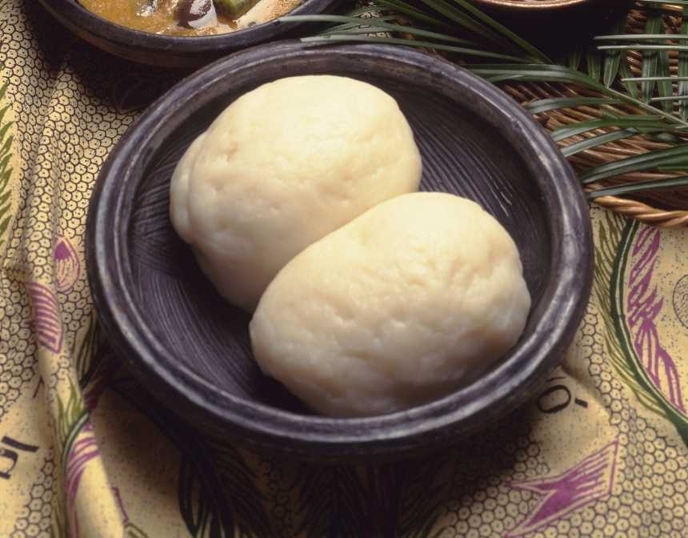

Yam fufu

Description
Fufu, African swallow food, is a filling side dish –
starchy, dense, smooth, and stretchy that is beloved
because it is simple, delicious, satisfying, and
easy to prepare. This dish is very common in
different African countries but might not be well
known to the rest of the world.
If you have heard about Fufu on social media and
might wonder what Fufu food is and how it is
prepared, read this article to learn all about
this beloved African food.
Ingredients
- 2 lbs of yam
- 1 tbsp of olive oil
- 1 tsp of black pepper
- 1 tsp of salt
Steps
- Take a medium-sized pot and pour cold water into it.
- Peel the yams carefully, cut them into chunks,
and place them in the cold water
- Let them boil over high heat for 25 minutes
or until they are soft.
- Remove the yams from the boiling water and
allow them to cool. Reserve one cup of the
cooking water.
- Now place the yams into a large bowl and
add salt, pepper, and olive oil.
- Mash all the ingredients using a food processor
until it becomes smooth. The mixture should
become sticky and slightly elastic.
- Add some of the reserved water and work the dough.
Keep working and adding water until you have a
springy dough that comes out from the bowl easily.
- Shape the Fufu into equal-sized balls and serve
with your favorite soup or stew.